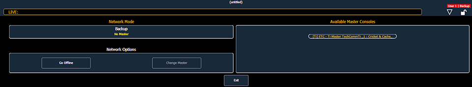
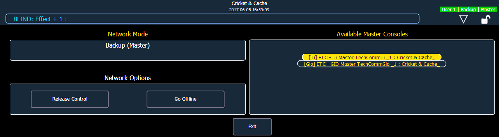

Before backup is possible, you must have at least two Eos devices (Consoles or RPUs only) connected to the network. One must be assigned as primary and one as a backup.
To assign a backup to a primary:
Note: If this is the first time that a backup is connecting to this master, you will need to press {Troubleshoot} and select the master.

In the CIA of each device, you will see its current status.
If the primary goes offline for any reason, the backup will automatically takeover as the master if backup auto switch has been enabled, see Backup Automatically Takes Control . Whenever master control changes between the primary and the backup, there will be a dialog window that will be displayed that must be dismissed by the user.
When master control moves between the primary and backup devices, any clients in the system will automatically connect to the current master. Clients will also display a message, but the message will be dismissed after a short period of time. The device status above the CIA will also change.
Note: A backup may take up to 5 seconds to determine that connection with the master has been lost. This timing can be adjusted based on network type selected in the ECU. See Network Type for more information.
If you enter the Network>Configure screen, it will have changed to the following.

Your backup is now acting as the master and is controlling the lighting system.
Note: If the primary comes back online, it will not retake control of the lighting system. The primary will wait until it is re-designated as the master and the backup is reassigned to it. You can force the backup to release control back to the primary by going to Browser>Network>Configuration and pressing the {Release Control} button. You can also force the primary to take control away from a backup by going to Browser>Network>Configuration and pressing the {Take Control} button.